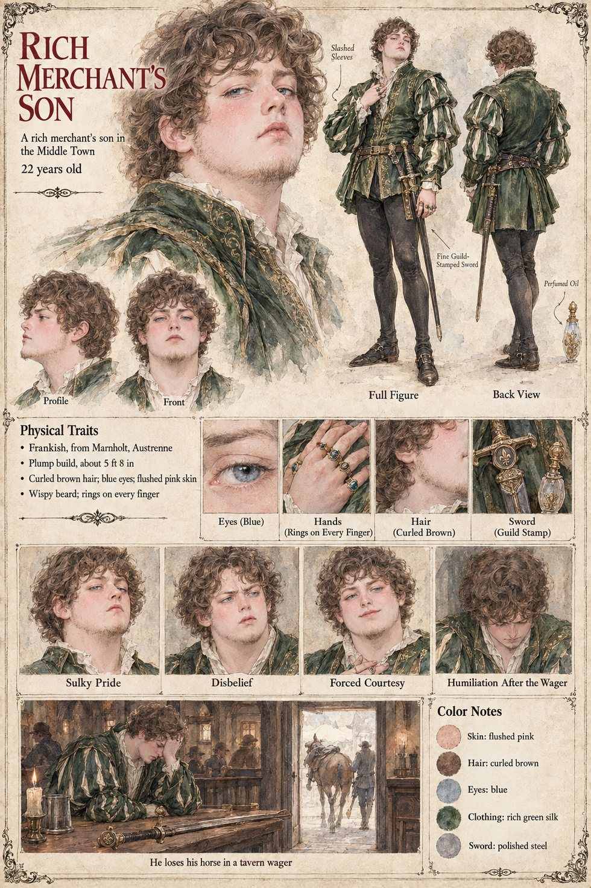

Rich Merchant's Son
A rich merchant's son of the Middle Town · unnamed · 22 years old by his sheet
One clause in the manuscript, and a second a few chapters on. In the first season of the black salt the customers of the Hammer-Oath begin to ask a question no Proved blade can answer, whether the Hall's best can take a notch from the Low Market's, and the question is put to the test in the yards of curious knights and in a tavern wager in the Middle Town that costs a rich merchant's son his horse; the manuscript does not say which side he backed. It is the same season in which the proportion in the Hall's ledger between the column headed Whole and the column headed Broken, which has not wavered in two centuries, shifts by an amount that Sigebert Marl will describe to a friend as unprofessional. In the second year the Duke of Tarnwald's steward Odilo, who is riding the Aure marches buying back the past, takes the sword that cost the young man his horse and returns the horse to him with a polite note.
The manuscript gives him no name, age, face or build. The sheet's twenty-two years, Frankish, from Marnholt in Austrenne, plump build of about 5 ft 8 in, curled brown hair, blue eyes, flushed pink skin, wispy beard and rings on every finger are its own, as are the slashed-sleeved green silk doublet, the fine guild-stamped sword, the flask of perfumed oil and the captions Sulky Pride, Disbelief, Forced Courtesy and Humiliation After the Wager. Its panel, He loses his horse in a tavern wager, takes the manuscript's clause as its title.
“a tavern wager in the Middle Town that cost a rich merchant's son his horse”